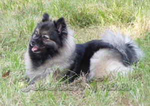

Порода: малый шпиц;
Дата рождения: 15.11.2000
Владелец: Поплавская Е;
Титулы:
|
Веселый Гном Ярославна |
||
| ВЕСЁЛЫЙ ГНОМ ЧИГЕТ | Vadonkozi Kolkwitz (Венгрия) | Amigo Divoky Zapad (Венгрия) |
| Vadonkozi Angy (Венгрия) | ||
| Весёлый Гном Делия | Aconny z Rozpaku (Чехия) | |
| Грейс Штеффи | ||
| ВЕСЁЛЫЙ ГНОМ ИЯ | Генрих | Sir Lucky |
| Глафира | ||
| Весёлый Гном Делия | Aconny z Rozpaku (Чехия) | |
| Грейс Штеффи | ||